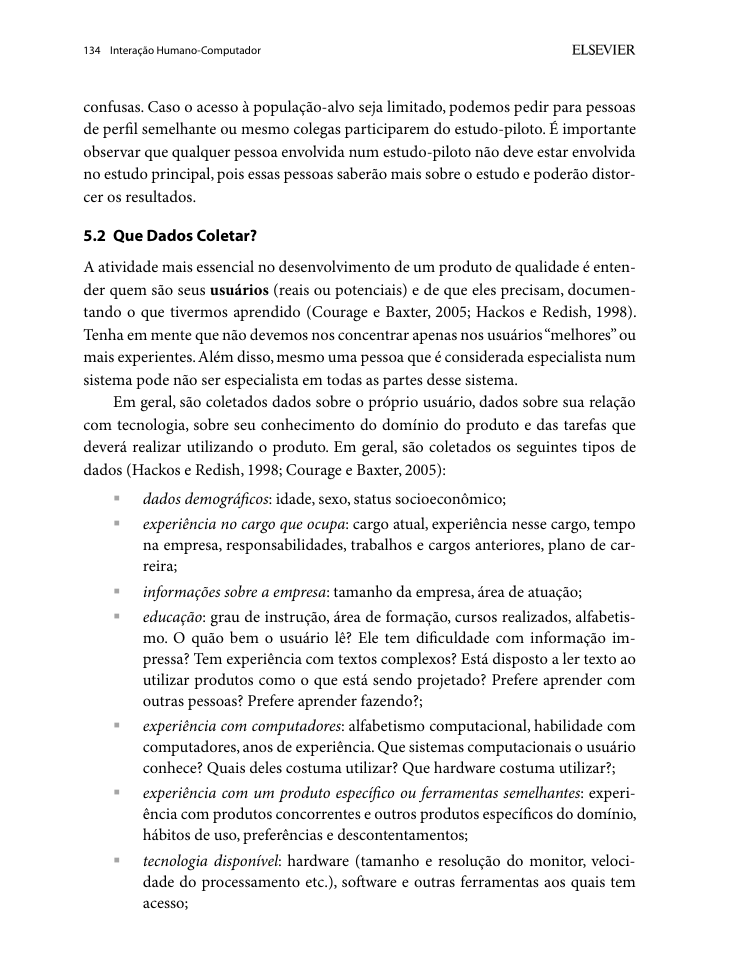
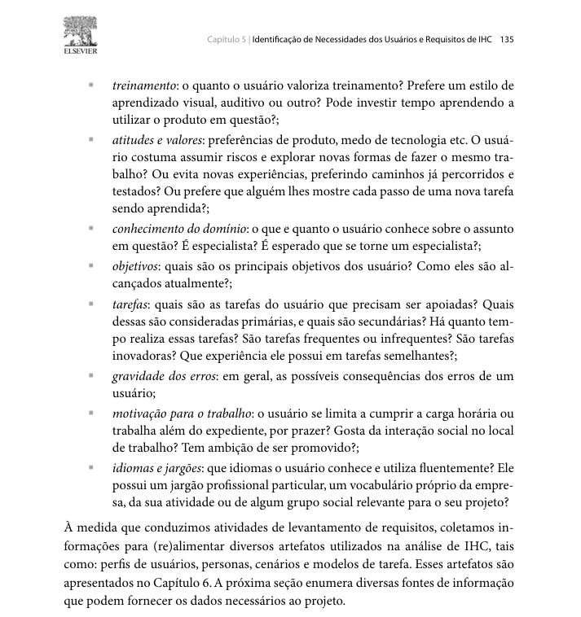
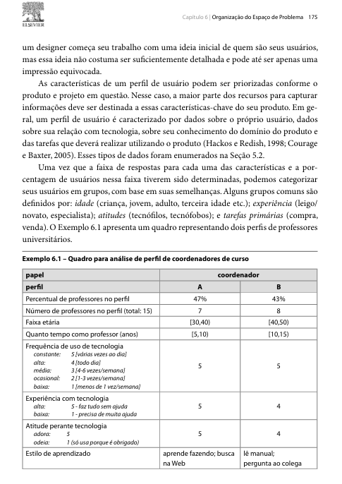

Responsável: Bruno Ferreira Dornelas — Perfil do usuário · Autor do item: Bruno Ferreira Dornelas
Perfil do usuário¶
Tabela de contribuição¶
A Tabela 1 registra quem atuou neste artefato.
| Integrante | Contribuição | Artefato / atividade |
|---|---|---|
| Bruno Ferreira Dornelas | Item de conteúdo sobre perfil do usuário | Item de conteúdo |
| Bruno Ferreira Dornelas | Planejamento da elicitação | Planejamento |
| Bruno Ferreira Dornelas | Consolidação do perfil do grupo | Perfil consolidado |
| Caio Breno de Souza Bezerra | Atributos da participante P2 (Caio) | Sessão Caio |
| Heitor Pinheiro Gonçalves das Chagas | Atributos da participante P3 (Heitor) | Sessão Heitor |
| Israel Soares de Paiva | Atributos da participante P4 (Israel) | Sessão Israel |
| Luís Henrique Luna de Arruda | Planejamento e dados confirmados da participante P5 | Sessão Luís |
Tabela 1 — Contribuição neste artefato.
Fonte: elaboração do Grupo 06 (2026).
Introdução¶
Esta página consolida o perfil do usuário do Portal do Senado Federal levantado pelo Grupo 06. O perfil é construído a partir das sessões individuais de entrevista e observação realizadas por cada integrante, que aplicam as duas técnicas de coleta adotadas pelo grupo. Os dados coletados alimentam o elenco de personas, os cenários e a análise de tarefas.
Item de conteúdo da disciplina¶
Autor do item: Bruno Ferreira Dornelas
O perfil de usuário é uma descrição detalhada das características dos usuários cujos objetivos devem ser apoiados pelo sistema. Segundo Barbosa e Silva (2010, p. 174), "devemos identificar as características de interesse (faixa etária, experiência, escolaridade etc.) e conduzir um estudo para coletar os dados dos usuários". Esses dados são agrupados em perfis de usuários, com os quais o grau de semelhança entre os indivíduos pode ser medido.
Hackos e Redish (1998 apud BARBOSA; SILVA, 2010, p. 134–135) propõem que os dados de usuário incluam: dados demográficos, experiência no cargo, informações sobre a empresa, educação, experiência com computadores, experiência com o produto, tecnologia disponível, treinamento, atitudes e valores, conhecimento do domínio, objetivos, tarefas, gravidade dos erros e idiomas e jargões. As Figuras 1 e 2 reproduzem esse trecho.


Fonte: BARBOSA; SILVA (2010, p. 134).


Fonte: BARBOSA; SILVA (2010, p. 135).
Courage e Baxter (2005 apud BARBOSA; SILVA, 2010, p. 175) agrupam os atributos do perfil em quatro categorias: idade, experiência, atitudes e tarefas primárias. As últimas quatro linhas da Tabela 3 seguem esses grupos. A Figura 3 reproduz esse trecho.


Fonte: BARBOSA; SILVA (2010, p. 175).
Planejamento da elicitação¶
Para construir o perfil do usuário por mais de uma técnica de coleta de dados (BARBOSA; SILVA, 2010, p. 134), o grupo adotou, em cada sessão individual, duas técnicas combinadas na mesma visita:
- Técnica 1 — Entrevista semiestruturada: levanta os atributos do perfil, objetivos, hábitos e opiniões do usuário em relação ao portal (BARBOSA; SILVA, 2010, p. 145–149).
- Técnica 2 — Observação da tarefa com relato em voz alta: o participante realiza uma tarefa real no portal enquanto o entrevistador observa e anota; fornece os passos concretos da HTA e da CTT (BARBOSA; SILVA, 2010, p. 164–166).
A Tabela 2 registra as sessões realizadas pelo grupo.
| Integrante | Participante | Perfil previsto | Data | Situação |
|---|---|---|---|---|
| Bruno Ferreira Dornelas | P1 — Bruno | Cidadão leigo | 27/09/2026 | ✅ Concluída |
| Bruno Ferreira Dornelas | — (análise documental e de similares) | Estudante/pesquisador | 26/09/2026 | ✅ Concluída |
| Caio Breno de Souza Bezerra | P2 — Caio | Estagiária / cidadã com consulta recorrente | 24/09/2026 | ✅ Concluída |
| Heitor Pinheiro Gonçalves das Chagas | P3 — Heitor | Participante / Militante de movimento social | 27/09/2026 | ✅ Concluída |
| Israel Soares de Paiva | P4 — Israel | Servidora pública, tarefa administrativa pontual | 29/07/2026 | ✅ Concluída |
| Luís Henrique Luna de Arruda | P5 — Luís | Engenheira química formada e estudante para concursos | 27/09/2026 | ✅ Concluída |
Tabela 2 — Sessões de coleta do grupo.
Fonte: elaboração do Grupo 06 (2026).
Perfil consolidado¶
O perfil consolidado reúne os dados coletados nas sessões individuais, organizados segundo os atributos de Hackos e Redish e os grupos de Courage e Baxter. A Tabela 3 apresenta os dados consolidados das cinco sessões realizadas pelo grupo.
| Atributo | P1 — Bruno (Cidadão leigo) | P2 — Caio (Estagiária/recorrente) | P3 — Heitor | P4 — Israel | P5 — Luís (Estudante/concurseira) |
|---|---|---|---|---|---|
| Dados demográficos | Homem, 22 anos | Mulher, 24 anos | Mulher, 21 anos | Mulher, 47 anos | Mulher, 24 anos |
| Status socioeconômico | Classe média baixa (inferida); caixa de supermercado, setor privado | Classe média (inferida); estagiária em órgão público federal | Classe média (inferida); estudante e secretária técnica em organização popular | Classe média (inferida); servidora pública | Classe média (inferida); graduada em Engenharia Química, estudante para concursos |
| Experiência no cargo | Caixa de supermercado (turno tarde/noite) | Estagiária há ~6 meses em órgão público | Secretária técnica há ~9 meses em organização camponesa / movimento social | Servidora pública | Estuda para concursos há um ano, desde o oitavo semestre da graduação |
| Informações sobre a empresa | Supermercado, setor privado | Órgão público federal | Movimento social e articulação comunitária (CLOC / Via Campesina) | Órgão público / setor público | Não se aplica à ocupação atual informada |
| Educação | Graduação em andamento, Ciências Econômicas (turno manhã) | Graduação em andamento, engenharia espacial | Graduação em andamento, Geografia | Ensino superior (inferido; servidora pública) | Engenharia Química concluída havia seis meses |
| Experiência com computadores | Autoavaliação 4 em escala de 1 a 5 | Alta — autoavaliação 4 em escala de 1 a 5 | Média a alta — uso constante de smartphone e ferramentas básicas no computador | Baixa familiaridade com sites institucionais | Intermediária; utiliza computador diariamente para estudar |
| Experiência com o produto | Esporádica; última visita ~3 meses antes (PEC 6×1) | Recorrente e de trabalho; última visita ~2 semanas antes | Esporádica; acessa sob demanda/campanhas de votação no e-Cidadania | Uma visita pontual; não concluiu a tarefa do auditório | Iniciante; poucos acessos para notícias e legislação, aproximadamente segundo contato |
| Tecnologia disponível | Computador pessoal/notebook para estudos; smartphone pessoal | Computador do órgão no trabalho; pessoal na sessão | Smartphone pessoal (acesso principal) e computador pessoal/notebook | Celular no dia a dia; computador na tarefa observada | Computador com Microsoft Edge na sessão |
| Treinamento e aprendizado | Explora sozinho; se travar, procura vídeo rápido no YouTube | Explora sozinha; usa vídeo ou IA para sistemas novos | Autodidata; não lê manuais; prefere resumos rápidos e diretos | Quando trava, busca ajuda ou informação por fora | Organiza estudos com Google Agenda, Gran Cursos e Estratégia Concursos; explora interfaces por tentativa e erro |
| Atitudes e valores | Gosta da aparência visual do portal; não gosta dos status opacos de tramitação | Gosta do visual e das opções de acessibilidade | Pragmática e engajada; apoia interfaces intuitivas; critica baixa divulgação | Desiste se a busca não responde em linguagem simples | Persistente, mas quase desistiu diante de um caminho pouco explícito; valoriza economia de tempo |
| Conhecimento do domínio | Leigo em legislação; busca informações que afetam seu círculo de convivência | Especialista no setor aeroespacial; leiga em legislação | Intermediário em processo legislativo; especialista em pautas do campo e reforma agrária | Leiga em processo legislativo; usa termos do dia a dia | Compreensão parcial de comissão; não conhecia CCJ; compreendia pauta e resultado |
| Objetivos | Entender a situação e o impacto da PEC 6×1 para colegas de trabalho e familiares afetados | Reunir notícias do setor para o anuário anual | Votar em matérias de relevância para a agricultura familiar e direitos coletivos | Confirmar se o auditório está livre e acompanhar leis de interesse | Passar em concurso ligado à Engenharia Química/ensino superior e consultar fontes oficiais com eficiência |
| Tarefas | Pesquisar termos do cotidiano, interpretar status de tramitação, recorrer a portal jornalístico quando o portal não entrega resposta direta | Levantar notícias por palavra-chave, descartar antigas e salvar para aprovação | Buscar projeto (PL 1215/2025), avaliar ementa e votar no e-Cidadania | Verificar a disponibilidade do auditório | Encontrar reunião realizada da CCJ e consultar data, pauta, item e resultado da votação |
| Gravidade dos erros | Média: informação incorreta circula no grupo de família; efeito social, não operacional | Baixa a média: notícia perdida costuma chegar por outro veículo | Média a alta: voto divergente desvirtua posicionamento do coletivo | Alta para ela: a tarefa fica sem resposta e ela sai do site | Caminhos incorretos consumiram tempo e quase levaram à desistência, mas não impediram a conclusão |
| Idiomas e jargões | Sem jargão legislativo; siglas desconhecidas vão para o Google | Vocabulário do setor aeroespacial; sigla desconhecida vai para o Google | Jargões de movimentos sociais ("soberania alimentar") e termos legislativos | Sem jargão legislativo; busca "senador" e "transparência" | Não conhecia “CCJ”, entendia parcialmente “comissão” e compreendia “pauta” e “resultado” |
| Grupo: idade | Jovem adulto | Jovem adulta | Jovem adulta (21 anos) | 47 anos | Jovem adulta, 24 anos |
| Grupo: experiência | Iniciante no portal; uso esporádico e motivado por impacto pessoal | Usuária frequente; sem uso dos controles de ordenação | Pontual / sob demanda de trabalho | Iniciante no portal; uma tentativa sem conclusão | Iniciante/ocasional; aproximadamente segundo contato |
| Grupo: atitude | Pragmático: desiste rápido quando o portal não entrega resposta direta e recorre a fonte externa | Tecnófila: explora sozinha e recorre a vídeo ou IA | Autodidata, pragmática e pró-participação popular | Desiste e busca ajuda fora do site | Exploratória e persistente, mas vulnerável à desistência quando o caminho não é explícito |
| Grupo: tarefa primária | Verificar aprovação e situação de projeto de lei de interesse cotidiano | Levantar notícias do setor por tema e período | Votar em consultas públicas de relevância socioambiental | Verificar a disponibilidade do auditório | Consultar pauta e resultado de reunião realizada da CCJ |
Tabela 3 — Perfil consolidado do usuário do Portal do Senado Federal.
Fonte: elaboração do Grupo 06 (2026), com base nas sessões individuais; categorias de BARBOSA; SILVA (2010, p. 134–135, 175).
P1, P2, P3, P4 e P5 estão com dados registrados e consolidados; os detalhes estão em Atributos para o perfil do usuário — P1, Atributos para o perfil do usuário — P2, Atributos para o perfil do usuário — P3, Atributos para o perfil do usuário — P4 e Atributos para o perfil do usuário — P5.
Síntese do perfil¶
Com base nos dados das cinco sessões, o usuário típico do Portal do Senado Federal identificado pelo grupo é um jovem adulto de 21 a 47 anos (maioria na faixa de 21 a 24 anos), com ensino superior em andamento ou concluído, experiência computacional de média a alta e uso esporádico e pontual do portal — motivado por eventos específicos ou demandas externas, e não por hábito regular. O acesso se dá majoritariamente por busca no Google, e não pela URL direta.
Em termos de atitude, os perfis coletados variam entre pragmáticos (desistem quando o portal não entrega resposta direta), tecnófilos (exploram sozinhos e recorrem a recursos externos) e exploratórios persistentes (tentam até concluir sem ajuda), sem perfis tecnofóbicos entre os entrevistados. O conhecimento do domínio legislativo é baixo a intermediário na maioria dos participantes — exceto aqueles cujo trabalho ou militância exige familiaridade com pautas específicas.
A tarefa primária predominante é a busca e o acompanhamento de proposições legislativas, seja por interesse pessoal (impacto em direitos trabalhistas, familiares ou cotidianos), profissional (levantamento de notícias, consulta a reuniões) ou cívico-militância (voto em consultas públicas). Em todos os casos, o ponto de atrito mais freqüente é a linguagem técnica do portal — siglas, status de tramitação opacos e jargões regimentais que dificultam a interpretação direta pelo cidadão leigo.
Perfis de usuário identificados¶
A partir da consolidação dos dados empíricos levantados nas sessões e na análise do sistema, o grupo categorizou as pessoas usuárias do Portal do Senado Federal em três perfis de usuário arquetípicos. Essa consolidação unifica no perfil de Cidadão Comum as diferentes vertentes de usuários externos que utilizam o portal por interesse próprio (seja para saber de leis do cotidiano, estudar para concursos ou buscar serviços institucionais), diferenciando-os claramente dos perfis de engajamento coletivo (Cidadão Participativo) e de pesquisa sistemática de trabalho (Pesquisador/Profissional):
1. Cidadão Comum (Consulta Legislativa, Estudos e Serviços)¶
O perfil de Cidadão Comum congrega os usuários externos que acessam o portal por interesse próprio e individual, sem vínculo funcional com a atividade parlamentar e sem domínio do rito regimental. Este grupo reúne três facetas com necessidades e comportamentos complementares:
- Cidadão leigo (impacto de leis no cotidiano): investigado na sessão de P1 (Bruno) e representado pela persona Mariana Costa. Acessa motivado por notícias sobre leis de forte repercussão social (ex.: direitos trabalhistas, aposentadoria, PEC 6×1). Desconhece siglas e ritos legislativos; busca em linguagem natural no Google e desiste rápido se a resposta não for direta. Sua tarefa primária é saber se uma proposta já foi aprovada e quando entra em vigor.
- Estudante / concurseira (notícias, legislação e comissões): investigado na sessão de P5 (Luís) e representado pela persona Marina Alves. Estuda para concursos ligados à Engenharia Química e ao ensino superior, consulta sites oficiais para notícias e legislação e ainda tem pouca experiência com o Portal do Senado. Conhece termos gerais (pauta e resultado), mas não conhecia a sigla CCJ. Navegou por menus, links e listas sem usar a busca global; retornou várias vezes e quase desistiu antes de encontrar Atividade legislativa. Sua tarefa primária é localizar uma comissão permanente e confrontar a pauta prevista com o resultado de uma reunião realizada.
- Cidadão com demanda administrativa pontual (espaços e serviços): investigado na sessão de P4 (Israel) e representado pela persona Marta Oliveira. Acessa não para acompanhar projetos de lei, mas para resolver demandas pontuais de infraestrutura pública ou cidadania (ex.: consultar a disponibilidade e uso de auditórios ou contatos institucionais). Utiliza vocabulário estritamente cotidiano (ex.: "auditório livre", "transparência"), tem baixa persistência diante de obstáculos no motor de busca e prefere linguagem simples a qualquer jargão burocrático.
Atributos centrais do Cidadão Comum:
- Faixa etária: Jovem adulto a adulto de meia-idade (22 a 47 anos).
- Educação e ocupação: Ensino superior em andamento ou concluído; atuando no setor privado, serviço público externo ou dedicando-se a estudos preparatórios.
- Experiência com o produto: Esporádica a ocasional; orientada por demanda pontual ou repercussão de momento.
- Domínio legislativo: Leigo a iniciante; forte dependência de linguagem simples, vocabulário cotidiano e rotas diretas.
- Ponto crítico na interface: Dificuldade com status regimentais opacos, excesso de siglas, busca que não entende linguagem coloquial e menus com pouca hierarquia para comissões e serviços.
2. Cidadão Participativo / Movimento Social (Engajamento Cívico)¶
Representa os cidadãos engajados em causas coletivas, atuantes em movimentos populares, sindicatos ou organizações da sociedade civil que utilizam os canais de participação social do Senado Federal.
- Investigação e persona: Coletado na sessão de P3 (Heitor) e representado pela persona Letícia Oliveira.
- Motivação: Mobilização coletiva e incidência política em matérias de relevância para seu grupo (ex.: pautas socioambientais, crédito emergencial para agricultura familiar).
- Conhecimento do domínio: Intermediário no processo legislativo geral e especialista nas causas do seu movimento.
- Comportamento e tecnologia: Acessa sob demanda orientada por campanhas públicas de votação; autodidata, pragmática e pró-participação; utiliza busca ativa pelo número/identificador do projeto de lei (ex.: PL 1215/2025).
- Tarefa primária: Localizar a proposição em debate e registrar o voto (Sim/Não) no canal do e-Cidadania.
- Ponto crítico na interface: Baixa saliência visual do botão de participação popular na página da matéria legislativa e quebra de contexto decorrente da autenticação externa via Gov.br.
3. Pesquisador / Profissional de Notícias (Consulta Técnica e Recorrente)¶
Engloba profissionais de imprensa, estagiários de órgãos públicos, assessores técnicos e pesquisadores acadêmicos que necessitam acompanhar sistematicamente a atividade legislativa para abastecer publicações, relatórios de conjuntura, anuários setoriais ou investigações acadêmicas.
- Investigação e persona: Coletado na sessão de P2 (Caio) e representado pela persona Renata Moreira (e pelo perfil de estudante/pesquisador em Direito Lucas Mendes).
- Motivação: Demanda técnica e profissional continuada de levantamento e compilação de matérias.
- Conhecimento do domínio: Especialista em sua respectiva área temática (ex.: setor aeroespacial, economia, direito), com alta proficiência computacional e facilidade com ferramentas digitais.
- Comportamento e tecnologia: Acesso frequente a partir de computador desktop/notebook; depende de busca estruturada por termos-chave, filtros de data e ordenação temporal.
- Tarefa primária: Pesquisar notícias e matérias por palavra-chave em determinado intervalo temporal, descartar itens fora do escopo e selecionar conteúdo para aprovação e publicação.
- Ponto crítico na interface: Desorganização na ordenação cronológica dos resultados de busca de notícias e ausência de filtros refinados por período.
Matriz comparativa dos perfis¶
A Tabela 4 sintetiza a relação entre os três perfis consolidados, as sessões empíricas, as personas associadas e suas principais características.
| Perfil de usuário | Subgrupos contemplados | Sessões de origem | Persona associada | Nível no domínio legislativo | Tarefa primária no portal |
|---|---|---|---|---|---|
| Cidadão Comum | • Cidadão leigo (leis cotidianas) • Estudante/concurseira (regimento e comissões) • Demanda administrativa (espaços e serviços) |
P1 (Bruno), P5 (Luís) e P4 (Israel) | Mariana Costa, Marina Alves e Marta Oliveira | Leigo a iniciante | Acompanhar tramitação de leis, consultar pautas/reuniões de comissão e verificar disponibilidade de espaços (auditório) |
| Cidadão Participativo | • Militantes sociais e cidadãos mobilizados em causas coletivas | P3 (Heitor) | Letícia Oliveira | Intermediário | Votar em consultas públicas de proposições legislativas no e-Cidadania |
| Pesquisador / Profissional | • Estagiários, jornalistas e pesquisadores temáticos | P2 (Caio) e análise documental | Renata Moreira (Lucas Mendes) | Especialista temático | Levantar e filtrar notícias e matérias por período e palavra-chave |
Tabela 4 — Matriz comparativa dos perfis de usuário do Portal do Senado Federal.
Fonte: elaboração do Grupo 06 (2026), com base em BARBOSA; SILVA (2010).
Agradecimentos¶
Esta página contou com o apoio de ferramenta de inteligência artificial generativa na estruturação, na redação preliminar e na formatação Markdown. A revisão do conteúdo, o planejamento da elicitação e a consolidação dos dados das sessões são do autor, que segue responsável pelo que está publicado.
Histórico de versão¶
| Versão | Data | Descrição | Autor(es) | Revisor(es) |
|---|---|---|---|---|
0.1 |
26/09/2026 | Estrutura, item de conteúdo, planejamento da elicitação e perfil com dados | Bruno Ferreira Dornelas | Caio Breno de Souza Bezerra |
0.2 |
27/09/2026 | Inclui os dados da sessão do Israel na coluna P4 | Caio Breno de Souza Bezerra | Bruno Ferreira Dornelas |
0.3 |
27/09/2026 | Atualiza dados da sessão de P1 (Bruno), inclui status socioeconômico e consolida com P4 | Bruno Ferreira Dornelas | Caio Breno de Souza Bezerra |
0.4 |
27/09/2026 | Inclui os dados da sessão do Heitor na coluna P3 | Heitor Pinheiro Gonçalves das Chagas | Bruno Ferreira Dornelas |
0.5 |
27/09/2026 | Consolida os dados preliminares de P5 informados pelo entrevistador | Luís Henrique Luna de Arruda | Caio Breno de Souza Bezerra |
1.0 |
27/09/2026 | Atualiza perfil de usuario | Bruno Ferreira Dornelas | Caio Breno de Souza Bezerra |
1.1 |
27/09/2026 | Conclui status da sessão de P5 (Luís) e consolida campos restantes na tabela de perfil | Bruno Ferreira Dornelas | Caio Breno de Souza Bezerra |
1.2 |
27/09/2026 | Adiciona seção de Perfis de Usuário Identificados, incorpora Estudante/Concurseira em Cidadão Comum e adiciona matriz comparativa dos perfis | Bruno Ferreira Dornelas | Caio Breno de Souza Bezerra |
1.3 |
27/09/2026 | Atualiza P5 e o perfil estudante/concurseira com as evidências da transcrição | Luís Henrique Luna de Arruda | Caio Breno de Souza Bezerra — revisão pendente |
1.3 |
27/09/2026 | Consolida os perfis em 3 grupos macro (unifica demanda de serviços/administrativa e estudos no Cidadão Comum) e atualiza matriz comparativa | Bruno Ferreira Dornelas | Caio Breno de Souza Bezerra |
Referências¶
[1] BARBOSA, Simone Diniz Junqueira; SILVA, Bruno Santana da. Interação humano-computador. Rio de Janeiro: Elsevier, 2010.
[2] HACKOS, JoAnn T.; REDISH, Janice C. User and task analysis for interface design. New York: John Wiley & Sons, 1998.
[3] COURAGE, Catherine; BAXTER, Kathy. Understanding your users. San Francisco: Morgan Kaufmann, 2005.